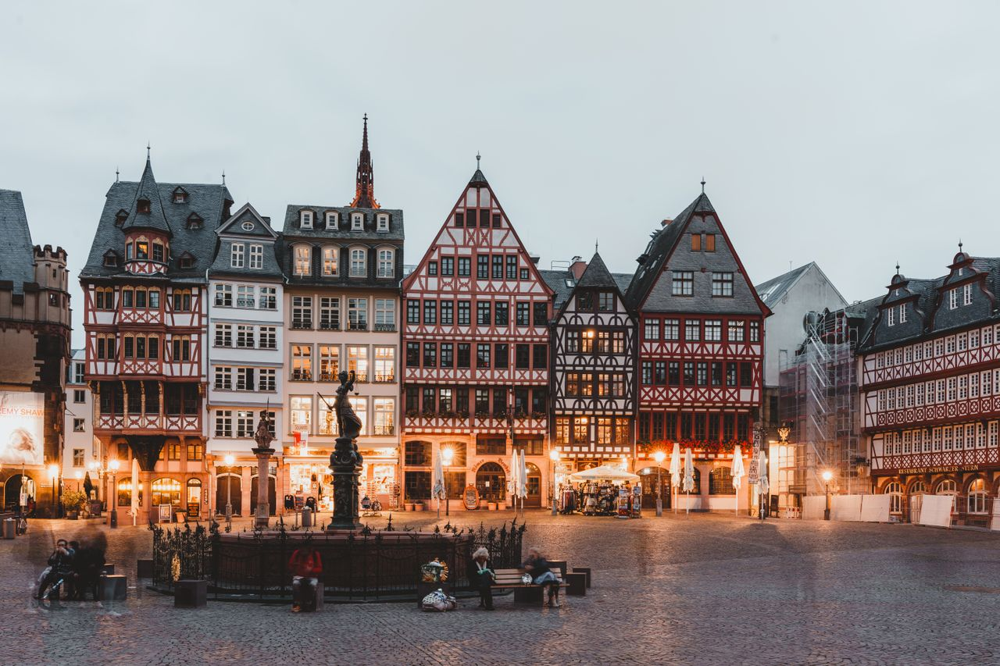
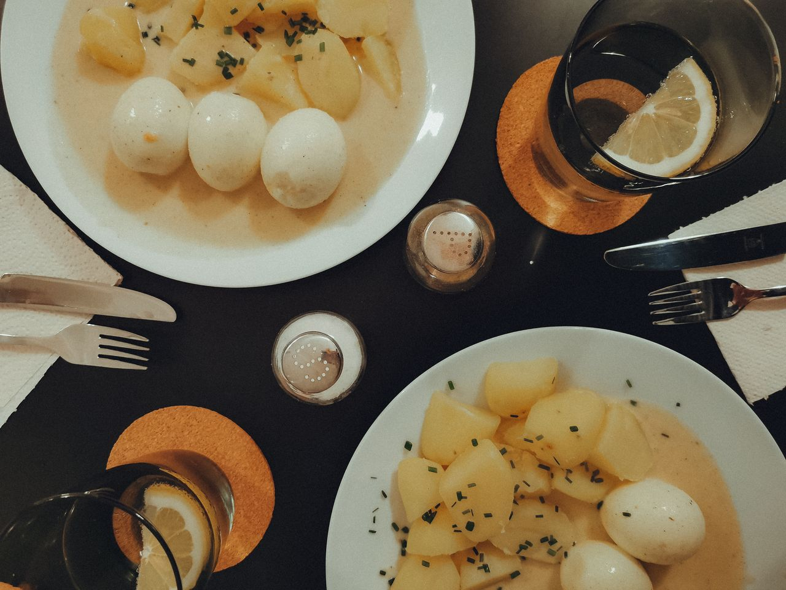
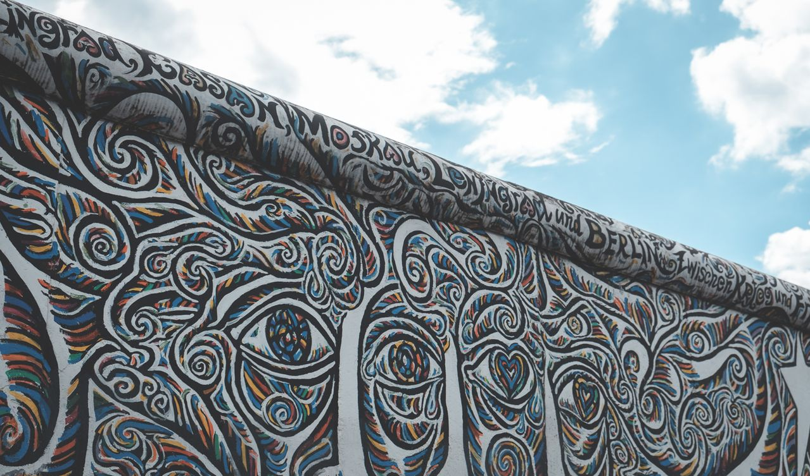
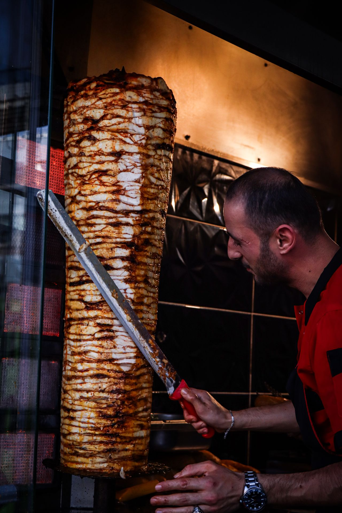
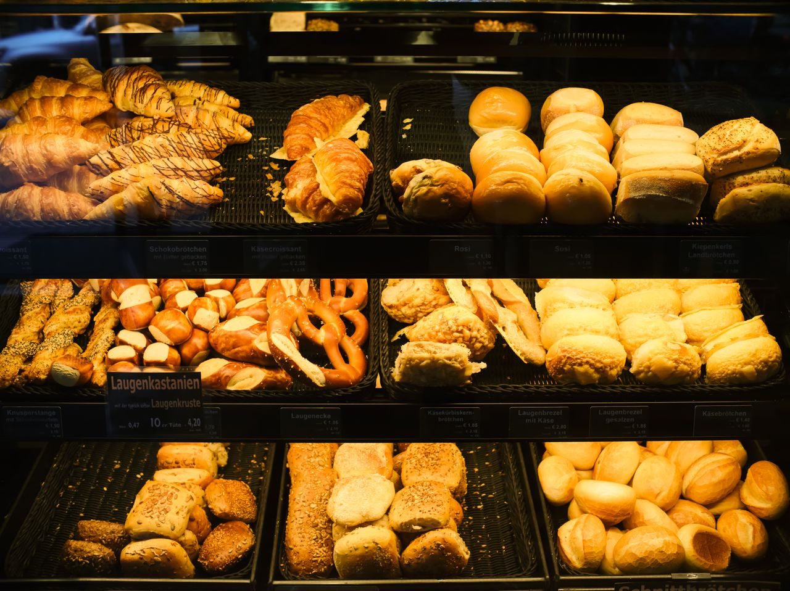
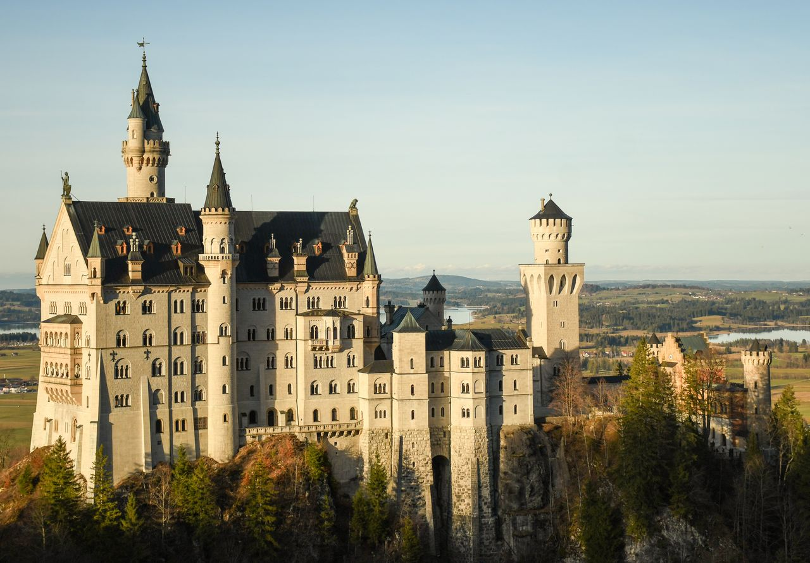

Eine Reise nach Deutschland
A 7-Day Interactive Journey exploring Frankfurt, Berlin, and Munich. Creating this website is part of our German language project.
A 7-Day Interactive Journey exploring Frankfurt, Berlin, and Munich. Creating this website is part of our German language project.
Day 1 & 2: Arrival, History & Traditional Food


Wir fliegen nach Frankfurt und besuchen den Römerberg. Das ist das historische Zentrum der Stadt mit alten Häusern.
Day 1: Arrival & History. We fly to Frankfurt and visit the Römerberg. This is the historic center of the city with old houses.
Zum Mittagessen probieren wir Grüne Soße mit Kartoffeln und Eiern. Das ist die berühmte Spezialität aus Frankfurt. Danach ruhen wir uns im Hotel aus.
Day 2: Frankfurt Food. For lunch we try Green Sauce with potatoes and eggs. This is the famous speciality from Frankfurt. Afterwards we rest in the hotel.
Day 3 & 4: The Berlin Wall, Monuments & Street Food
Wir fahren mit dem ICE-Zug nach Berlin. Dort sehen wir die berühmte Berliner Mauer. Sie hat sehr viel Geschichte.
Day 3: Train Ride & Berlin Wall. We travel by ICE train to Berlin. There we see the famous Berlin Wall. It has a lot of history.
Wir besuchen das Brandenburger Tor. Zum Abendessen gibt es Döner Kebab am Straßenstand. Der Döner kommt aus Berlin. Sehr lecker!
Day 4: Landmarks & Döner. We visit the Brandenburg Gate. For dinner there is Döner Kebab at a street stand. The Döner comes from Berlin. Very delicious!


Day 5, 6 & 7: Bavarian Castles, Pretzels & Departure


Wir reisen nach München zum Marienplatz. Zur Jause essen wir große bayerische Brezeln.
Day 5: Marienplatz & Pretzels. We travel to Munich to the Marienplatz. For a snack we eat large Bavarian pretzels.
Ein Ausflug in die Berge! Das Schloss Neuschwanstein ist alt, märchenhaft und wunderschön.
Day 6: Fairytale Castle. A trip to the mountains! Neuschwanstein Castle is old, fairytale-like and beautiful.
Wir kaufen Geschenke am Flughafen. Unser Urlaub in Deutschland ist zu Ende. Auf Wiedersehen!
Day 7: Souvenirs and Departure. We buy gifts at the airport. Our vacation in Germany is over. Goodbye!
Scan the QR codes on our 3D model or click play to listen to our team members.
Gesprochen von Husnie Mubarak
Arrival & History (Frankfurt)
Gesprochen von Jansi Sharma
Food & Hotel (Frankfurt)
Gesprochen von Shreya Rai
Train Ride & Wall (Berlin)
Gesprochen von Husnie Mubarak
Landmark & Street Food (Berlin)
Gesprochen von Pratyush
Marienplatz & Pretzels (Munich)
Gesprochen von Abhinav Srivastava
Fairytale Castle (Bavaria)
Gesprochen von Ansh
Souvenirs & Departure (Airport)